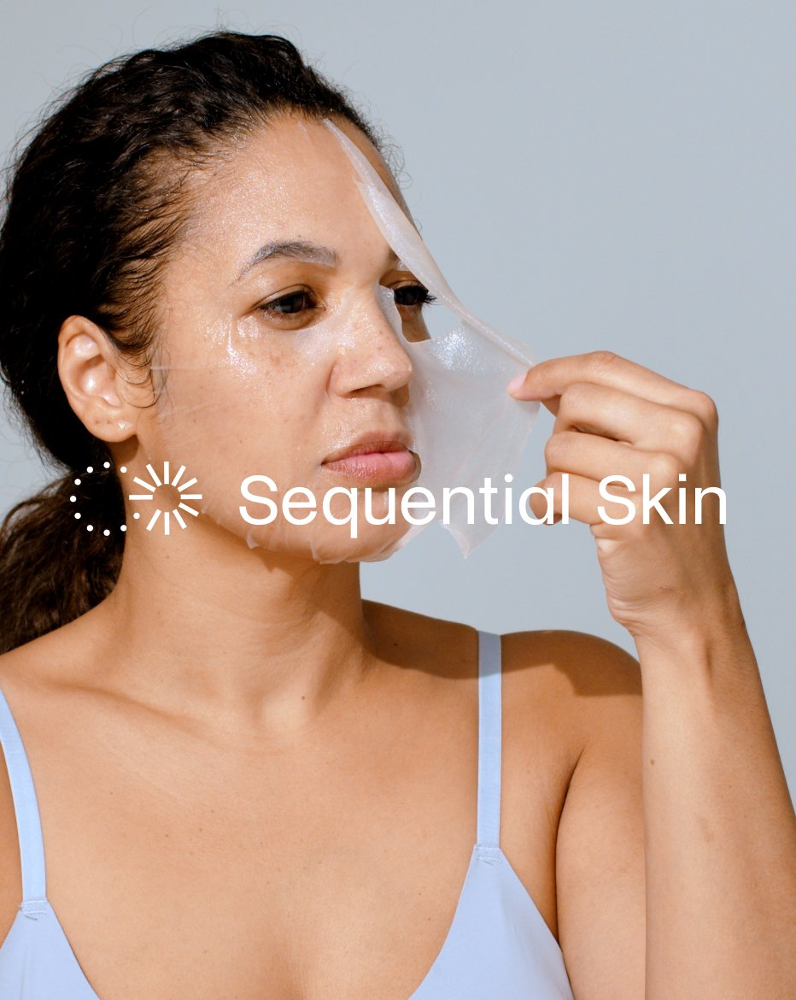
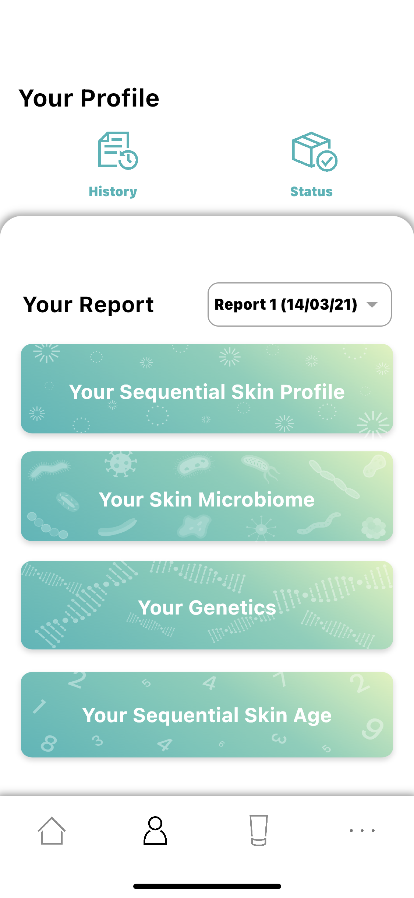
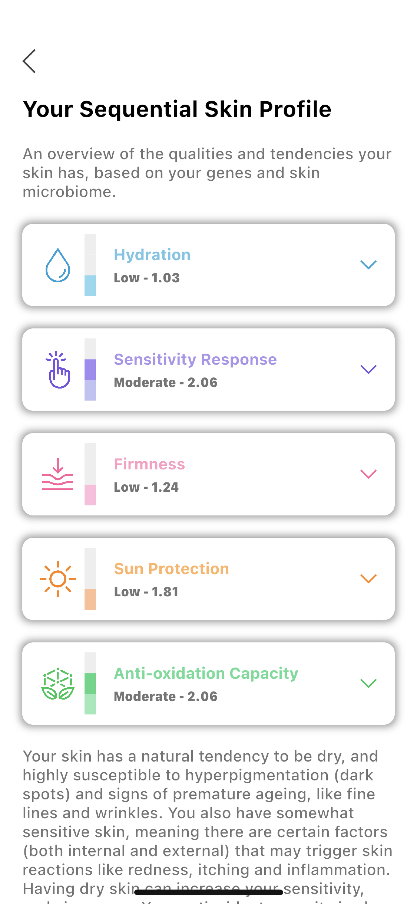
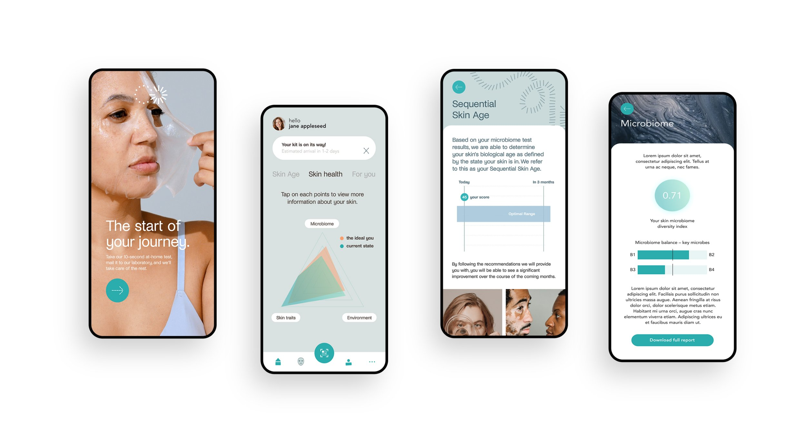
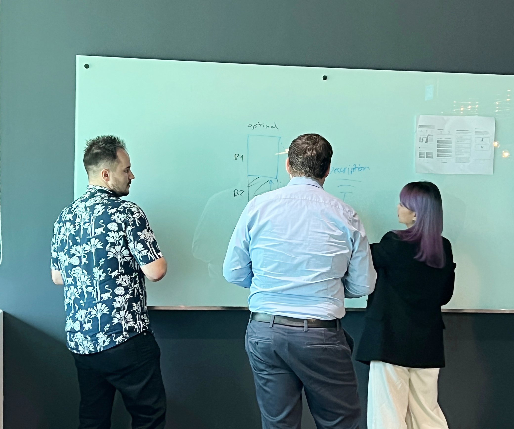
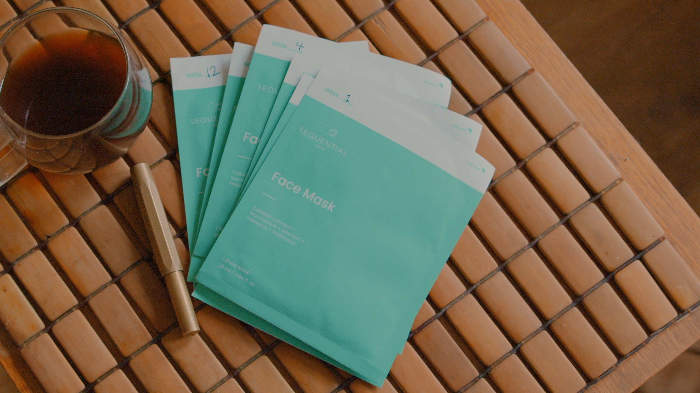

Transforming the Skincare Experience: Sequential Skin App Redesign
Redesigning a microbiome skincare startup’s app (UX + UI) to streamline onboarding, improve usability, and enhance information clarity — through workshops, design audits, and usability studies.

A full app redesign (UX + UI) for a microbiome skincare startup — grounded in physical kit testing, a design audit, stakeholder workshops, and a usability study — delivered on-site with a six-person team on a two-week cadence.
Personalised skincare, powered by microbiome data
Sequential Skin is a healthtech startup offering personalised skincare recommendations based on microbiome and genetics data. The app faced usability challenges — including confusing onboarding and overwhelming information — that made it difficult for users to engage with their skincare insights.
Through workshops, design audits, and usability studies, the app was transformed into a user-friendly platform that better aligned with the brand’s vision and boosted user engagement.
The visual rebrand — logo and brand identity — was delivered by a separate design studio; my work covered the app redesign (UX + UI), research, and usability validation.
A product with strong science — but a confusing experience
Challenge
Sequential Skin’s app suffered from a confusing onboarding process, poor usability, and overwhelming presentation of information, making it difficult for users to engage and understand their skincare insights.
Goal
Redesign the app for a seamless user experience, improve onboarding, enhance information clarity, and rebrand the app to boost user engagement and retention.
What I did
I led the end-to-end redesign — from requirements gathering and physical kit testing through design audits, interface redesign, rebranding, and usability validation.
- Led comprehensive requirements gathering and analysis to understand the client’s needs
- Tested the physical kits to evaluate the end-to-end user experience, from sample collection to app submission
- Optimised the onboarding process, ensuring a seamless journey from using the kits to onboarding within the app
- Facilitated feature prioritisation workshops with the client to align product development with business goals
- Conducted design audits and navigation assessments to identify areas for improvement
- Redesigned the app’s user interface (UX + UI), applied the new brand identity from the rebranding studio, and streamlined navigation for better usability
- Led a usability study to validate the design changes and enhance user satisfaction
- Improved the app’s information presentation, making it more engaging and user-friendly
The through-line of this project: making a microbiome-data app legible to the people using it — simpler onboarding, clearer hierarchy, a navigable flow.
From discovery to delivery
- Conducted meetings with the client to identify key areas for improvement, focusing on onboarding, usability, and information presentation
- Mapped the entire user experience from physical kit usage to app onboarding, identifying pain points and areas for streamlining
- Facilitated workshops to prioritise features and align product development with business goals, ensuring user and client needs were met
- Performed a detailed audit and analysed user data to pinpoint usability and navigation issues
- Researched competing apps to benchmark best practices in onboarding and user experience, applying insights to improve Sequential Skin’s app
- Led the redesign of the app’s interface, rebranding it to align with the company’s vision while enhancing navigation and user flow
- Conducted usability studies to validate the new design and onboarding process, ensuring improvements were effective
- Streamlined the app’s navigation based on audit results, making the user journey more intuitive and user-friendly
- Collected ongoing feedback from users and stakeholders to iteratively refine the design and ensure alignment with goals
- Implemented the redesigned app, improving onboarding, usability, and information clarity to enhance overall user engagement
Before & after
The old design

Mapping of the existing app


The redesigned experience

.png)



What we delivered
- Redesigned app interface (UX + UI) with streamlined navigation and clearer information hierarchy
- Optimised onboarding across the physical kit experience — sample collection, submission, and first-time app use
- Prioritised feature roadmap developed through stakeholder workshops
- Usability study validating the redesigned flows with real users
- Integration of the new brand identity (from the rebranding studio) into the redesigned app UI
- Alignment between product, design, and business stakeholders through a two-week delivery cadence
What I took forward
Onboarding friction was a journey problem, not a screen problem
The weakest point wasn’t any single screen. It was the transition from the physical kit to the app — sample collection, submission, then onboarding. Fixing screens in isolation wouldn’t have moved the needle; the redesign had to treat the physical-to-digital journey as one continuous flow.
Data-heavy products need subtraction, not addition
Microbiome data is already hard to interpret. Every additional UI element added cognitive load on top of content that was already demanding. The redesign mostly removed things — extra nav, redundant copy, features that didn’t connect to a user goal — rather than adding new ones.